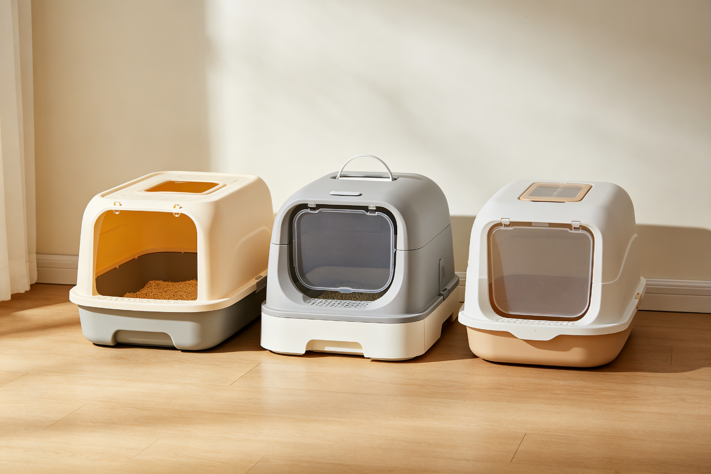
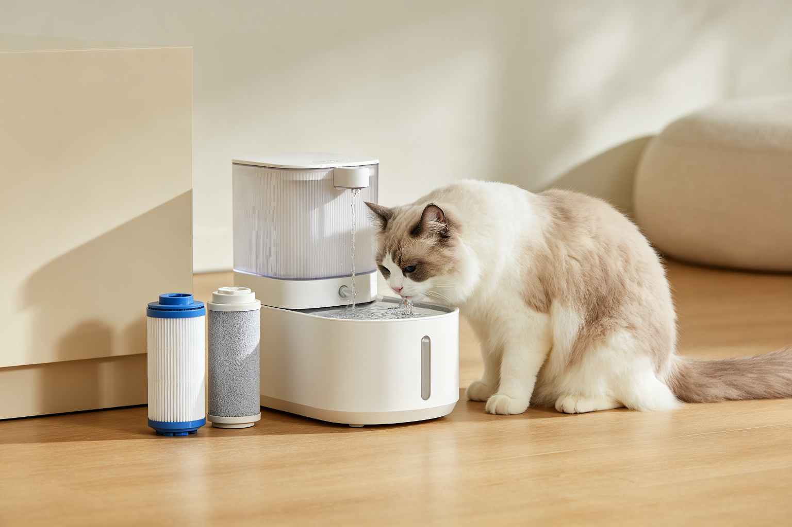
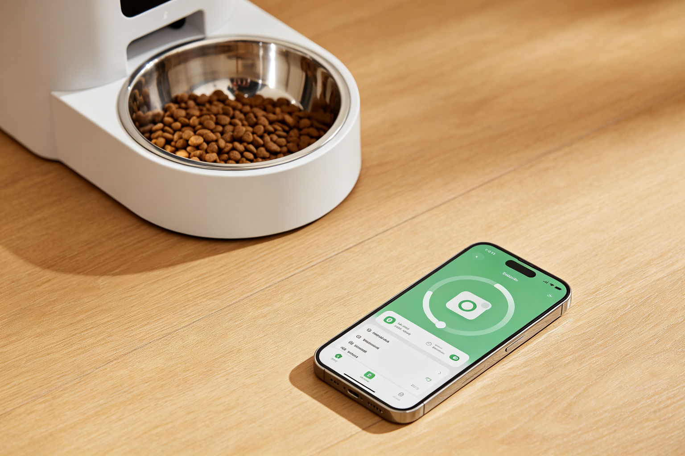
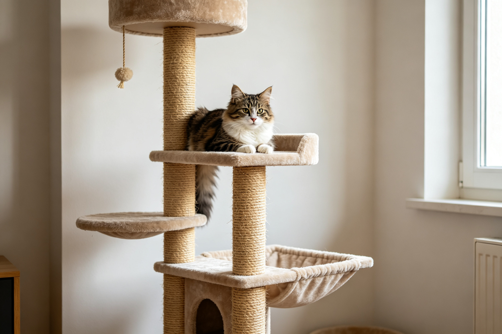
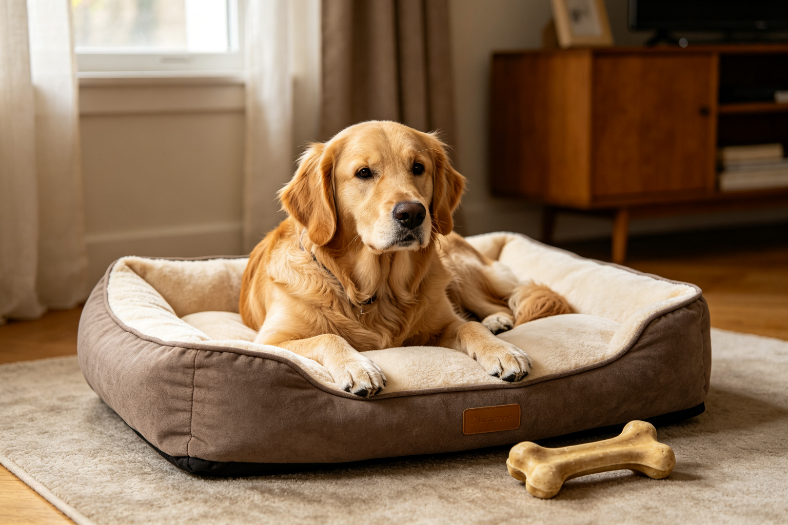
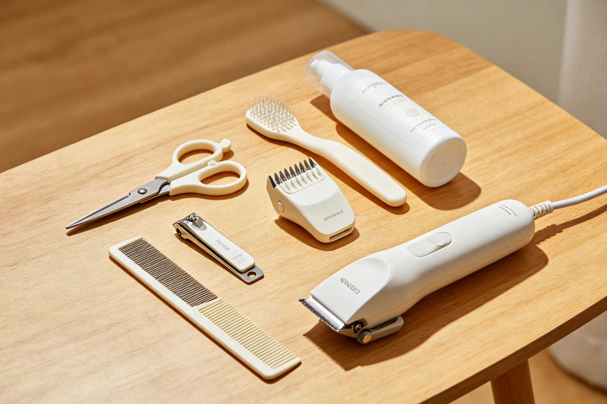
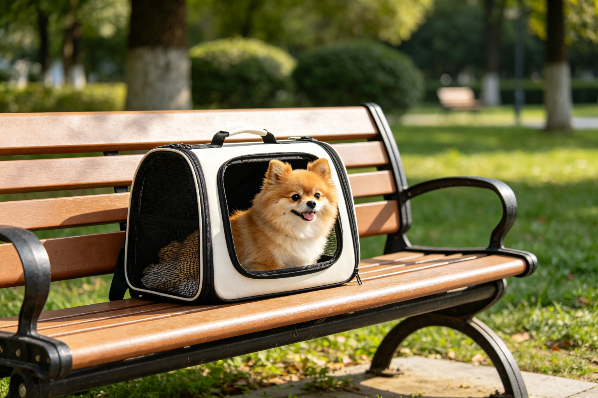
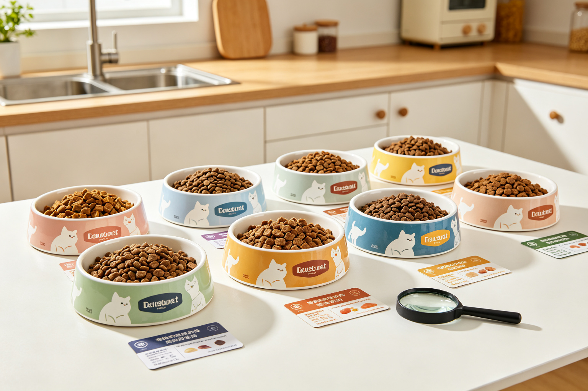

貓砂盆推薦：開放式、封閉式與自動鏟屎機
貓砂盆是貓家庭最重要的用品之一——選錯了貓咪可能拒絕使用或亂尿。2026年最新10款貓砂盆實測：開放式、半封閉式、全封閉式、頂入式、自動鏟屎機，從尺寸、防帶砂、...

寵物飲水機推薦：馬達噪音與濾芯成本比較
寵物飲水機可以增加貓狗的飲水量，但選錯了可能噪音太大、清潔困難、濾芯太貴。2026年8款熱門寵物飲水機橫評：有線vs無線、塑膠vs不鏽鋼、馬達噪音分貝、濾芯更換...

自動餵食器推薦：雙電源與App功能比較
自動餵食器是忙碌飼主的救星，但卡糧、斷電、App連線不穩可能讓寵物挨餓。2026年10款熱門自動餵食器評比：雙電源設計、防卡糧機制、出糧精準度、App功能（遠端...

寵物攝影機推薦：畫質、夜視與雙向語音
寵物攝影機讓你上班時也能看到家裡的毛孩，還可以雙向語音和投零食。2026年8款熱門寵物攝影機評比：畫質解析度、夜視效果、雙向語音清晰度、零食投擲功能、移動偵測、...

貓跳台推薦：穩定性、高度與材質比較
貓跳台是貓咪的垂直領土——不夠穩會晃、太高貓咪不敢上、材質不好貓咪不喜歡抓。2026年10款熱門貓跳台評比：穩定性（底座重量與結構）、高度與層數、材質（絨布vs...

狗窩推薦：記憶棉與大型犬支撐力
狗窩的好壞直接影響狗狗的關節健康與睡眠品質——尤其是大型犬和高齡犬。2026年8款熱門狗窩評比：支撐力（記憶棉密度、骨科泡棉）、尺寸適合性、透氣性、可拆洗設計、...

寵物美容工具推薦：指甲剪、梳子與電剪
寵物美容工具選對了可以在家輕鬆美容，選錯了可能受傷或造成寵物陰影。2026年10款熱門寵物美容工具評比：指甲剪（ Guillotine vs 鉗式 vs 電動磨...

寵物外出包推薦：透氣性與航空公司認證
寵物外出包是帶寵物出門的必備品——透氣不好會中暑、安全性不夠可能逃脫、不符合航空公司規定無法登機。2026年8款熱門寵物外出包評比：透氣性（網面面積與通風設計）...

貓糧推薦：成分、營養價值與適口性比較
貓糧是貓咪健康的基礎——成分不好可能導致過敏、腎病、肥胖。2026年10款熱門貓糧評比：成分來源（肉類vs肉粉vs副產品）、營養保證值（蛋白質、脂肪、灰分）、適...